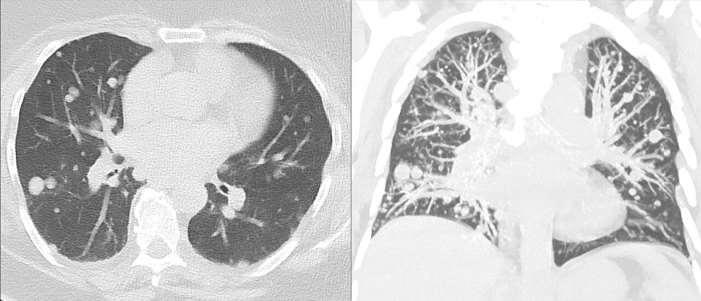

Ficha del catálogo
Metástasis pulmonares
- Sistema
- Respiratorio
- Modalidad
- TC
- Región
- Tórax
- Dificultad
- Intermedio
Siembra en el pulmón de células tumorales procedentes de otro órgano, la mayoría por vía hematógena. El pulmón es uno de los destinos más frecuentes de la diseminación tumoral por su papel de filtro de todo el retorno venoso. La tomografía es la técnica de referencia para detectarlas y para valorar la respuesta al tratamiento.
Técnica
Tomografía de tórax con cortes finos, con o sin contraste según el objetivo del estudio, revisada de forma sistemática con ventana pulmonar.
Qué observar
- Nódulos múltiples redondeados de bordes bien definidos
- Predominio en campos inferiores y en la periferia por el mayor flujo
- Tamaños variados que sugieren siembras sucesivas
- Cavitación en metástasis de tumores escamosos
- Nódulos calcificados en metástasis de origen óseo o tiroideo
- Engrosamiento septal nodular cuando existe diseminación linfática asociada
Hallazgos
Nódulos pulmonares múltiples de bordes lisos y tamaño variable con predominio basal y periférico en un paciente con tumor conocido.
Perlas
El aspecto de suelta de globos con nódulos de distinto tamaño y distribución periférica es muy sugerente. Una lesión solitaria en un paciente oncológico no siempre es metástasis, de modo que conviene valorar la posibilidad de un tumor pulmonar primario.
Diagnóstico diferencial
- Nódulos infecciosos
- Bordes mal definidos con fiebre y cambios rápidos en el control.
- Granulomas antiguos
- Pequeños, calcificados y estables durante años.
- Nódulos de vasculitis
- Cavitados con halo y contexto clínico sistémico.
Simuladores
- Vasos cortados de forma perpendicular
- Nódulos pleurales o de la pared torácica
- Artefactos de movimiento en las bases
Por modalidad
- RX
- Detecta solo los nódulos mayores y pierde muchos periféricos
- TC
- Técnica de elección para detección y seguimiento
Protocolo
Adquisición volumétrica con cortes finos y revisión con proyecciones de máxima intensidad, manteniendo el mismo protocolo en los controles.
Clasificación
Errores frecuentes
- Etiquetar como metástasis todo nódulo en un paciente oncológico
- No revisar con proyecciones de máxima intensidad y perder nódulos pequeños
- Comparar con estudios de técnica distinta y sacar conclusiones sobre el crecimiento

metastasis pulmonares nodulos multiples diseminacion hematogena oncologia seguimiento